Программа Саджи — схема занятия
Асаны по порядку: название, номер и картинка. Нажми на карточку, чтобы открыть описание в таблице.
Разминка 1–4
Суставная разминка (1)
sūkṣma vyāyāma
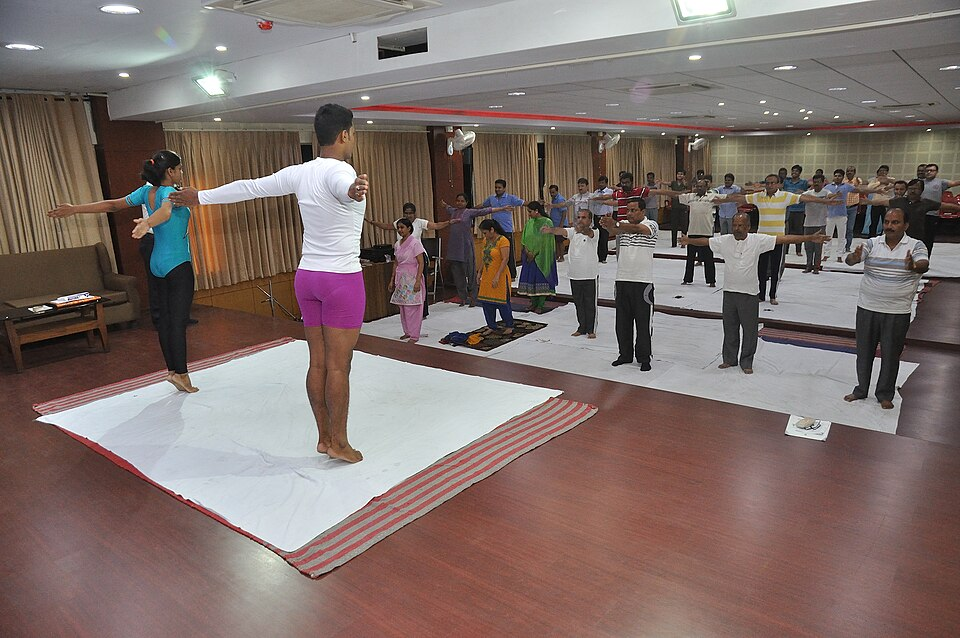
Приветствие солнцу (2)
sūrya namaskāra

Кошка — корова (3)
mārjārīāsana — bitilāsana

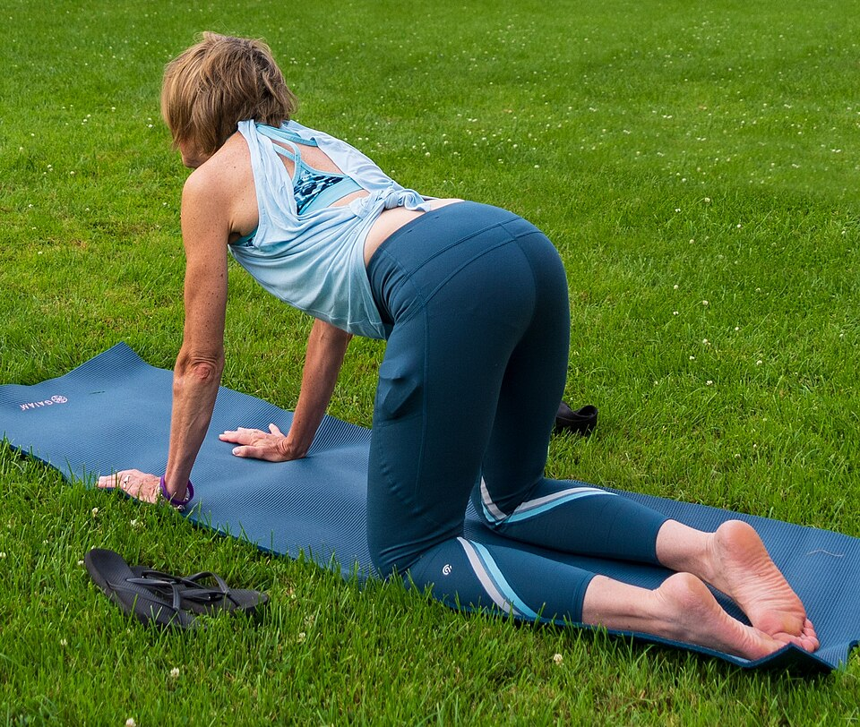
Поза тигра (4)
vyāghrāsana

Лёжа на спине 5–13
Поочерёдный подъём ног (5)
eka pāda uttānapādāsana

Подъём двух ног (6)
uttānapādāsana

Колено к груди (7)
pavanamuktāsana
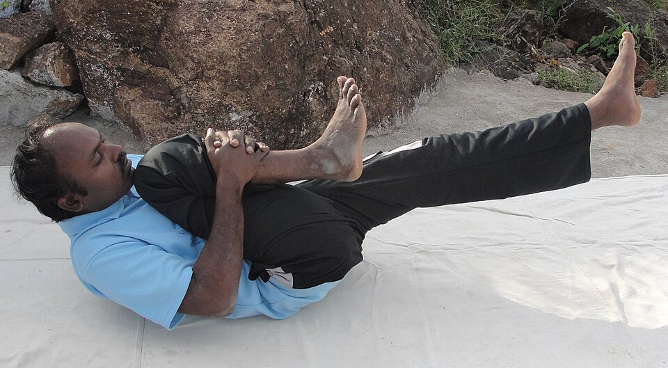
Счастливый ребёнок (8)
ānanda bālāsana

Нога вверх с захватом (9)
supta pādāṅguṣṭhāsana
нет картинки
Полумост (10)
setu bandhāsana

Скручивание лёжа (11)
jaṭhara parivartanāsana
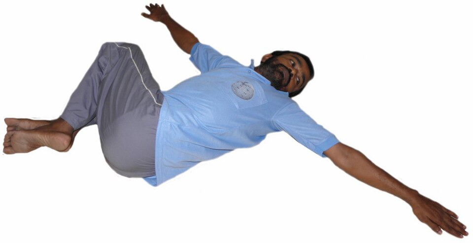
Низкая лодка (12)
ardha nāvāsana

Лодка с захватом пальцев (13)
ubhaya pādāṅguṣṭhāsana

Лёжа на животе 14–17
Поза крокодила (14)
makarāsana
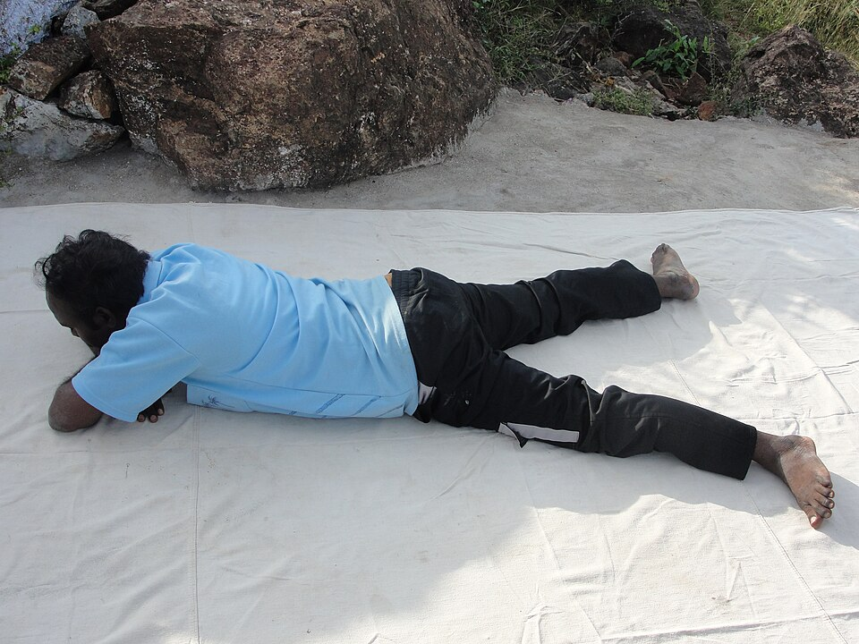
Сфинкс (15)
sālamba bhujaṅgāsana
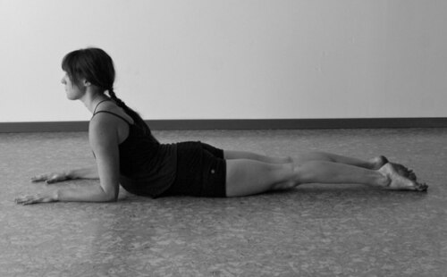
Кобра (16)
bhujaṅgāsana
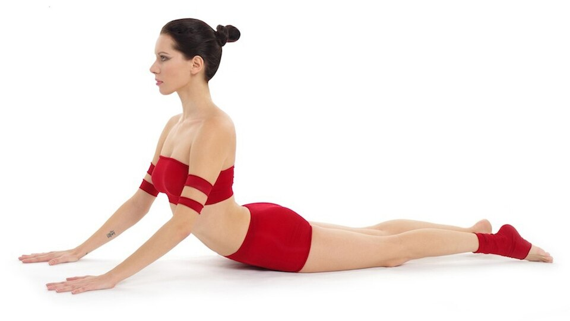
Лук (17)
dhanurāsana

Переход 18–20
Поза ребёнка (18)
bālāsana

Собака мордой вниз (19)
adho mukha śvānāsana
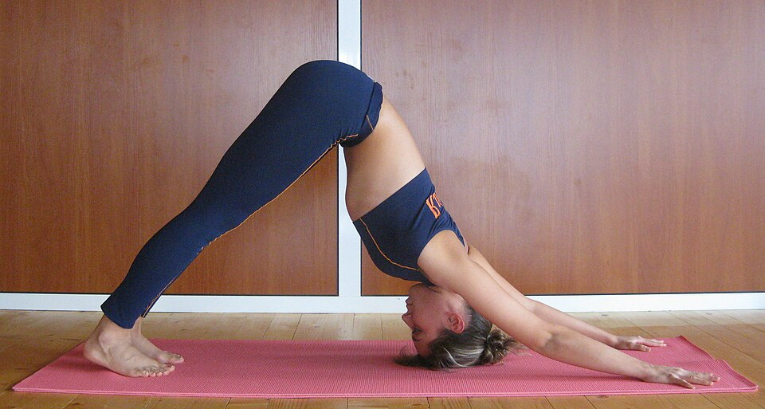
Голубь (20)
eka pāda rājakapotāsana
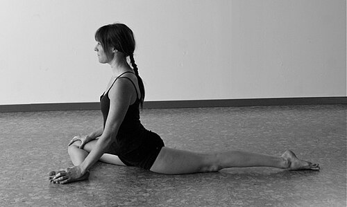
Лёжа на боку 21

Сидя 22–27
Наклон к одной ноге (22)
jānu śīrṣāsana

Наклон к двум ногам (23)
paścimottānāsana
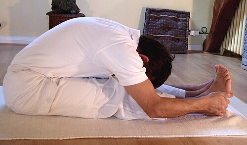
Скручивание сидя (24)
ardha matsyendrāsana
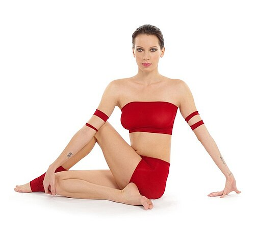
Коровья морда (25)
gomukhāsana

Ноги в стороны (26)
upaviṣṭa koṇāsana

Бабочка (27)
baddha koṇāsana
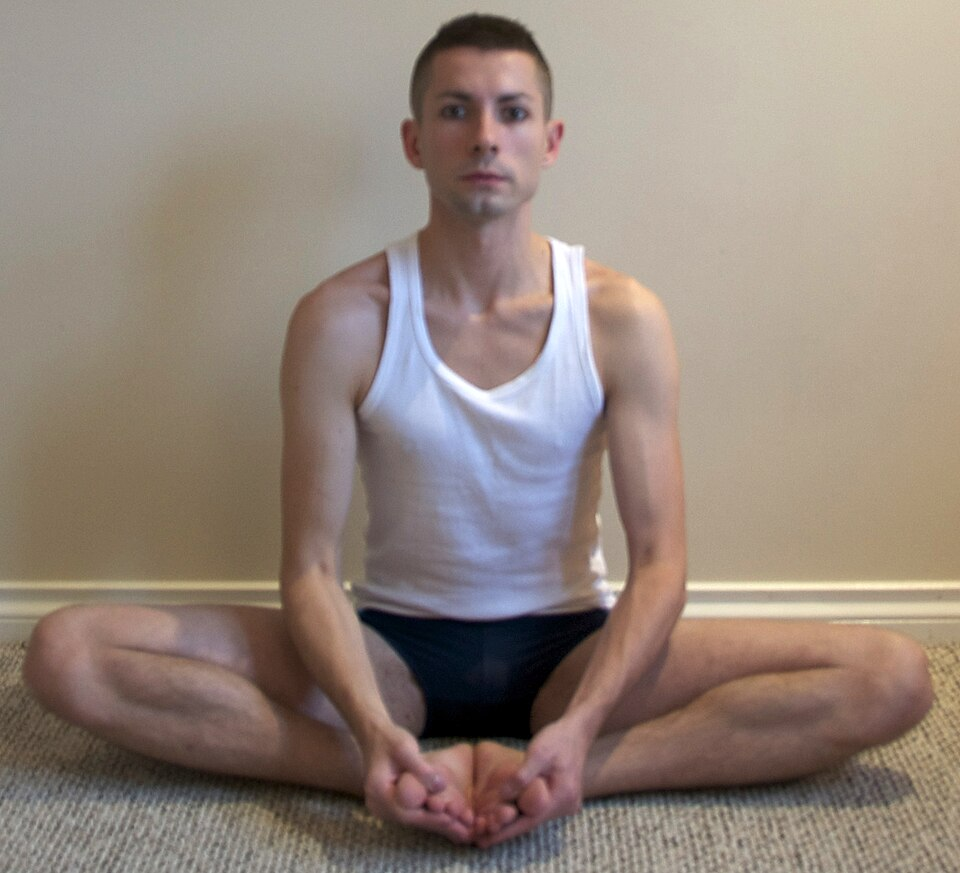
Перевёрнутые 28–31
Плуг (28)
halāsana

Берёзка (29)
sarvāṅgāsana

Полуберёзка (30)
viparīta karaṇī
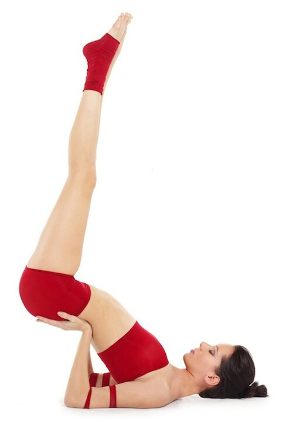
Поза рыбы (31)
matsyāsana

Стоя 32–35
Первые три позы — связка на одну ногу, затем вся связка на другую.
Поза воина (32)
vīrabhadrāsana

Треугольник (33)
trikoṇāsana
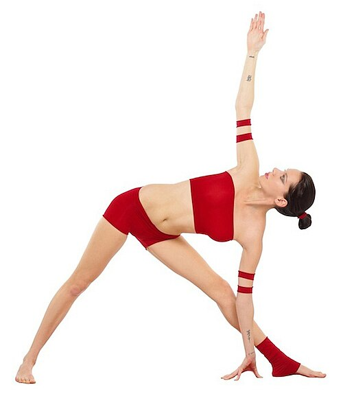
Наклон к передней ноге (34)
pārśvottānāsana
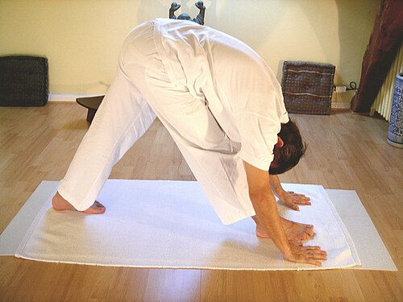
Дерево (35)
vṛkṣāsana
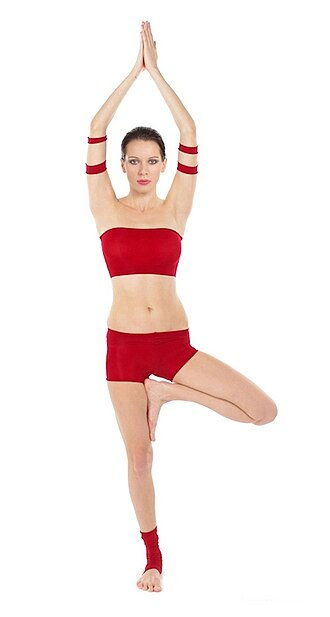